Toulouse-Lautrec Museum
There are works of art that make us stop without quite knowing why. A light, a face, a gesture, a detail that almost escapes us, then suddenly holds our gaze…
These notebooks preserve the traces of those encounters, my moments of wonder and my emotions.
As we wander through the galleries, I invite you to follow my gaze.
Look closely
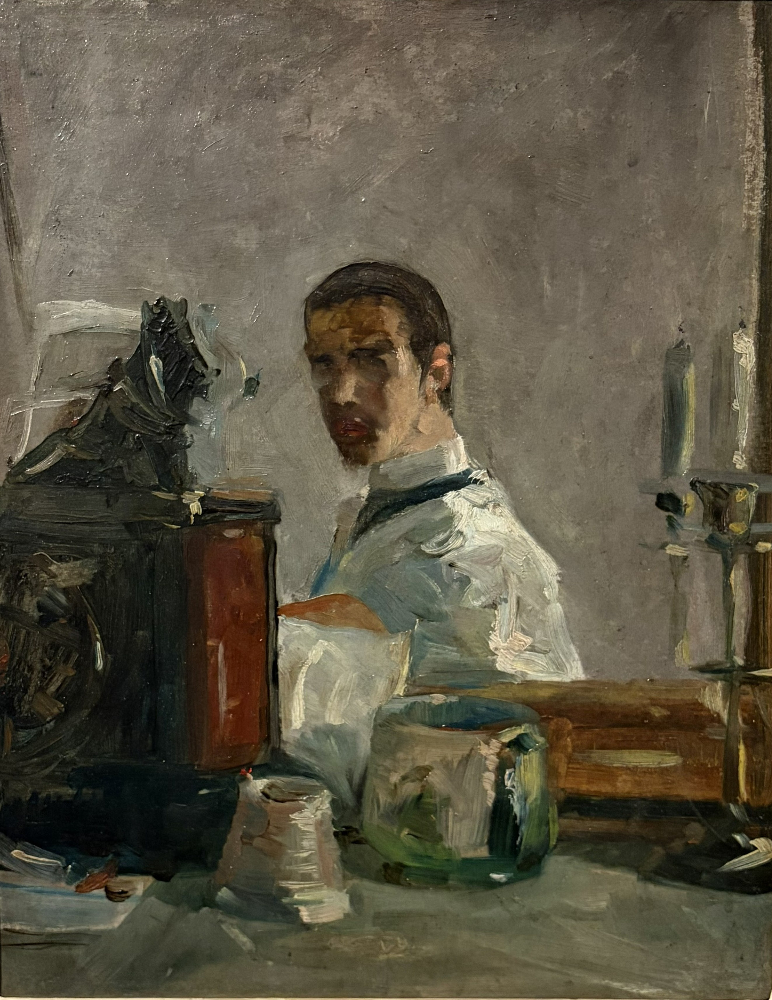
The young Toulouse-Lautrec does more than reproduce the animal: he captures its expression. The prominent muzzle, drooping ears and attentive gaze give this dog an almost human personality.
Photographie personnelle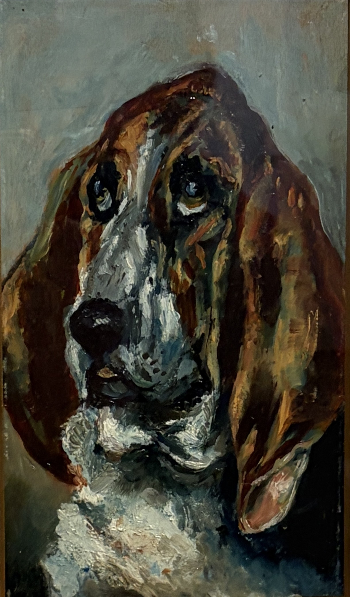
In this animal portrait, Toulouse-Lautrec goes beyond a simple anatomical study. He observes a posture, an expression, almost a personality. Even as a young painter, he seeks to capture life rather than reproduce every detail.
Photographie personnelle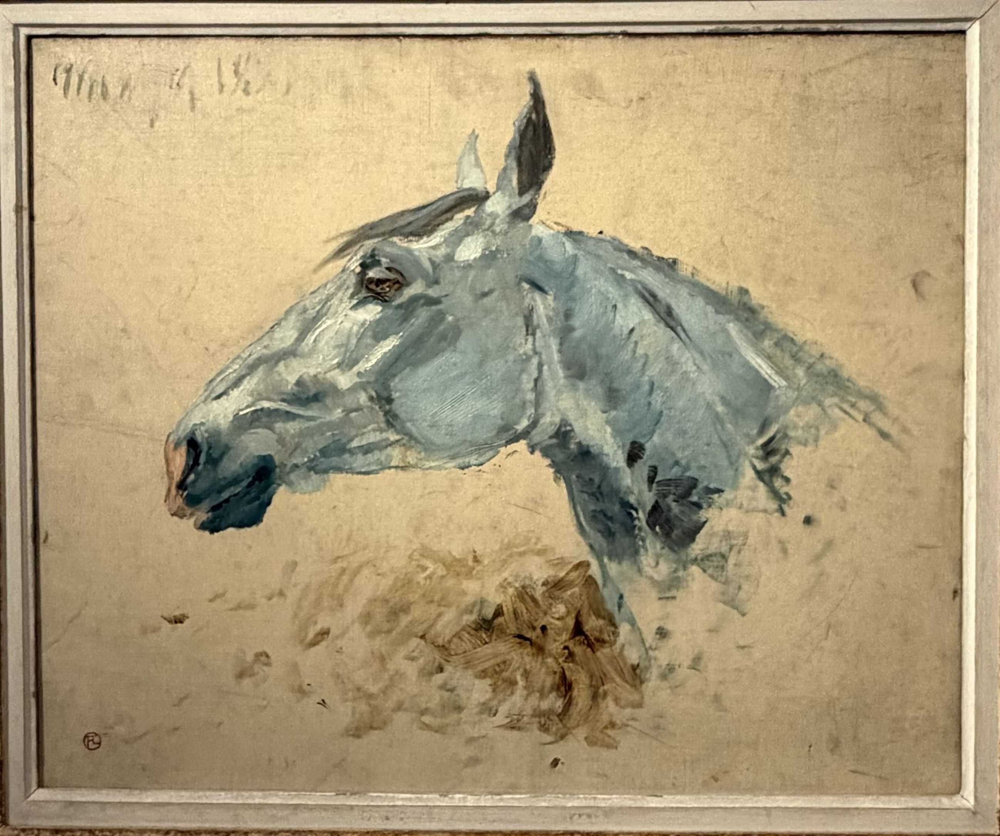
Just a few brushstrokes bring the horse's head to life. The painting remains loose, almost sketch-like, yet the animal feels alive. Toulouse-Lautrec is already learning to capture the essential without depicting every detail.
Photographie personnelleBefore his posters and scenes of Montmartre, Toulouse-Lautrec paints the animals of his familiar world. With René Princeteau, an animal painter and friend of his father, he develops his powers of observation: capturing a pose, understanding a body and conveying its presence.
In 1882, he enters the studio of Léon Bonnat, a portrait and history painter whose teaching places great emphasis on drawing and studying the model. He later continues his training with Fernand Cormon. The freedom of his later work thus grows out of a thorough artistic education.
A Different Point of View
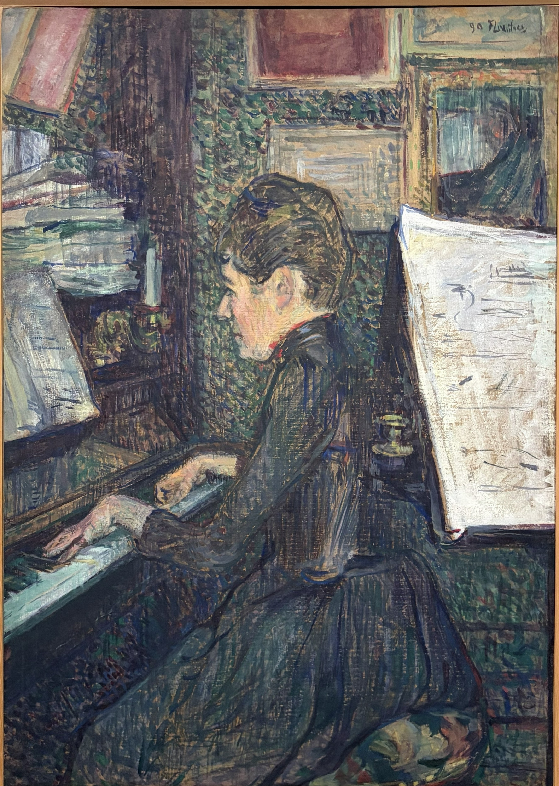
A profile, hands on the keyboard: Lautrec brings us into the musician’s private world from the side.
Photographie personnelle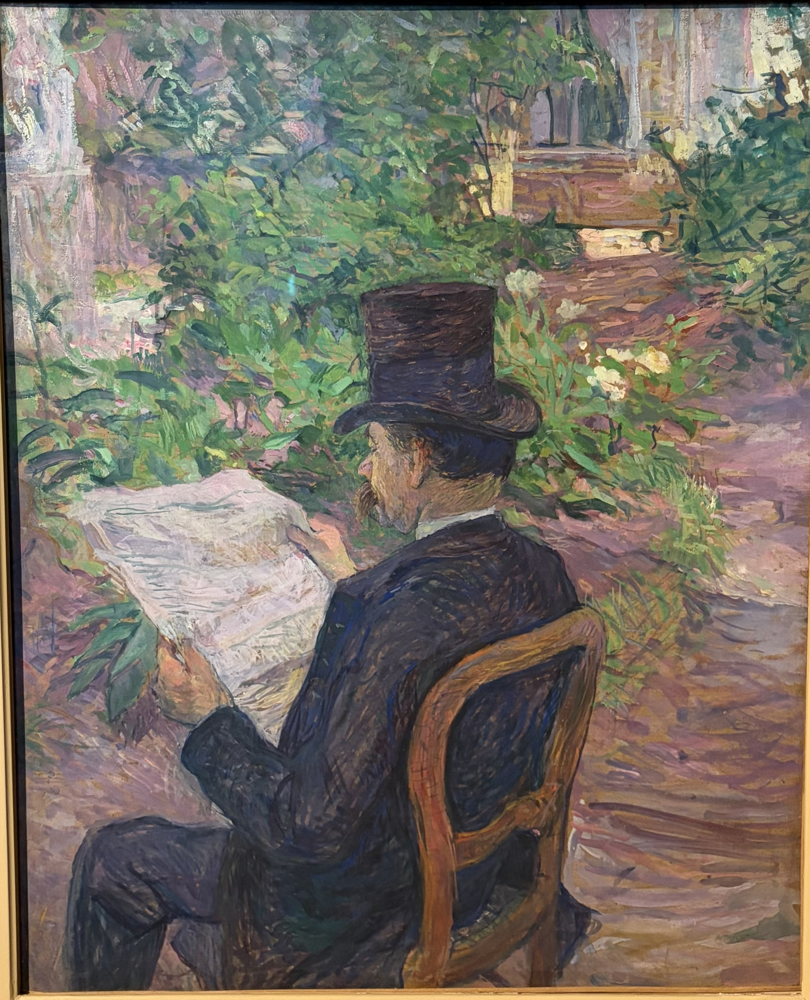
A portrait almost from behind: the hat, newspaper and posture reveal as much about the man as his face.
Photographie personnelleA portrait can reveal someone without showing their whole face. Lautrec chooses viewpoints from the side or behind, giving posture, gestures and objects as much importance as facial features. We feel we are glimpsing a moment of everyday life rather than watching someone pose.
Seemingly Unfinished
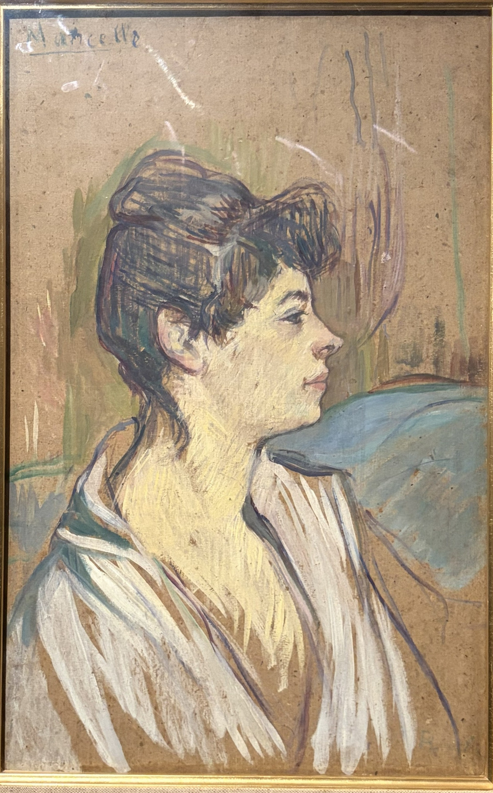
The face comes into focus, while the clothing and setting remain loosely sketched. A few brushstrokes suggest the rest.
Photographie personnelle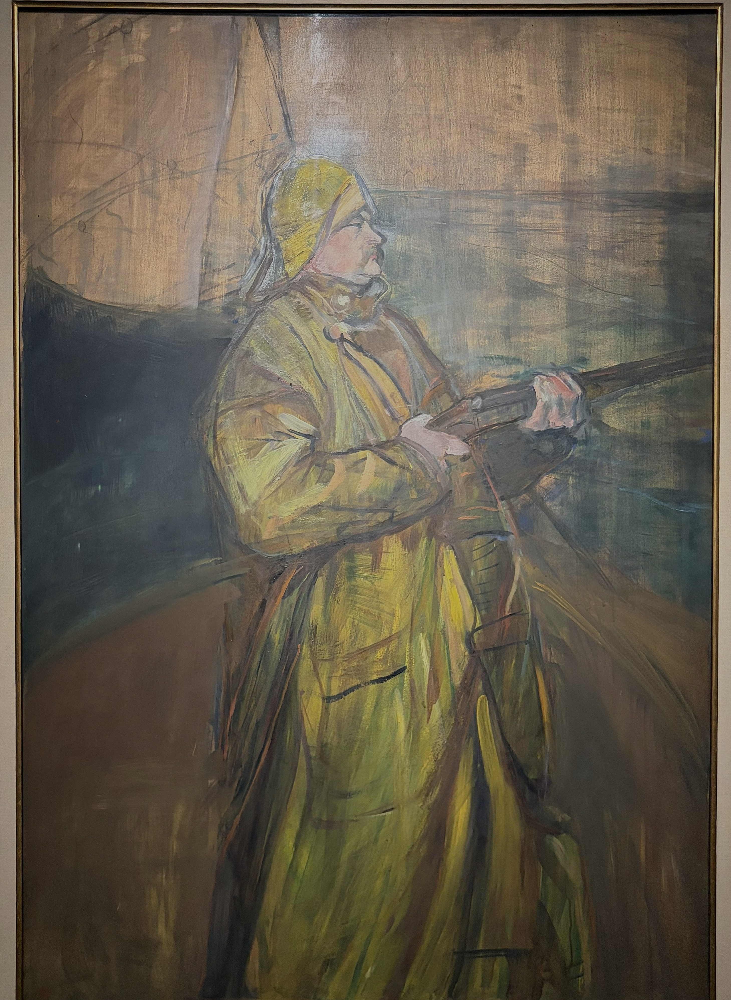
The yellow oilskin gives the figure a strong presence; around him, visible lines and light brushstrokes leave the painting room to breathe.
Photographie personnelleLautrec does not describe every detail: he paints the essentials, giving the figure expression, posture and presence. The face may be precisely rendered while the clothing or setting remains loosely sketched. Despite this unfinished appearance, nothing seems to be missing: our eyes complete the forms, and our imagination extends the lines. The painting does not need to show everything to feel complete.
Intimacy
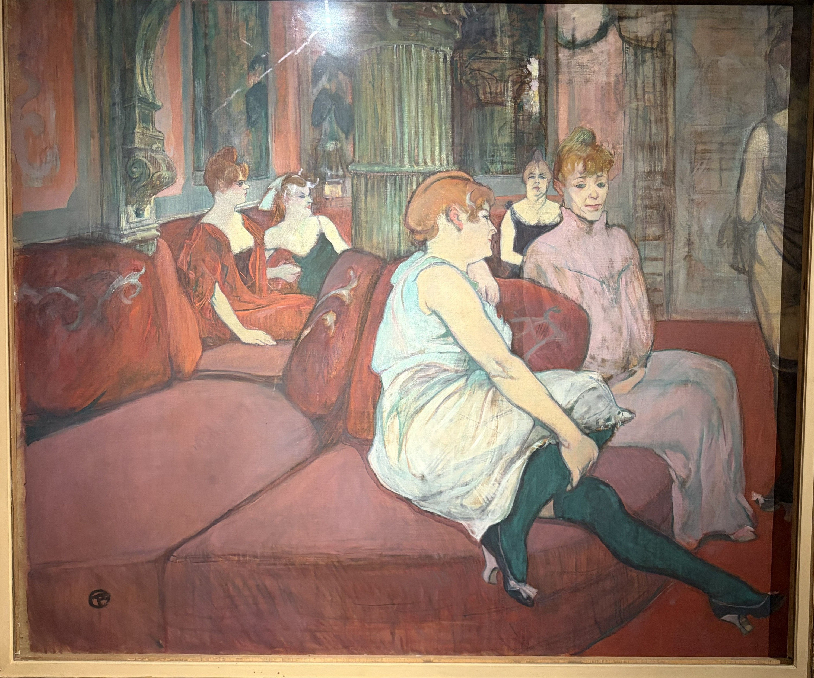
In the brothel, the women await their medical examination. Their wandering gazes and slumped postures convey the boredom of waiting.
Photographie personnelle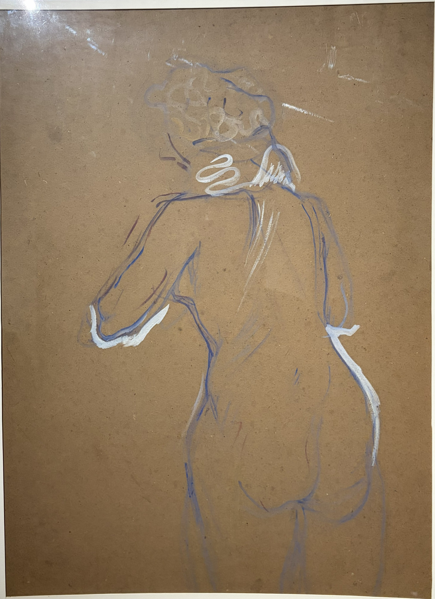
A nape, a shoulder, the curve of a back: a few lines capture a pose without needing to show the face.
Photographie personnelle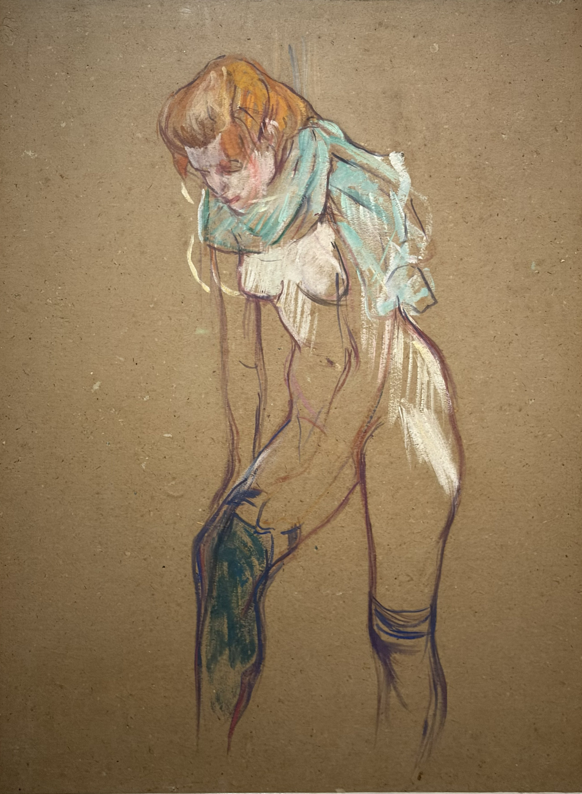
Bending over her stocking, the woman is absorbed in an everyday gesture. A few flowing lines convey its movement.
Photographie personnelle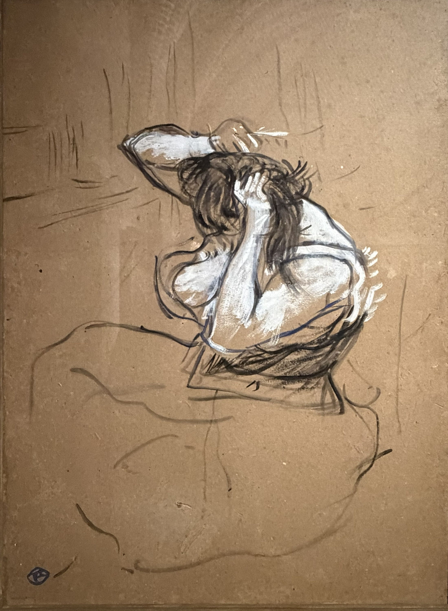
Arms rise and hair falls: Lautrec captures a familiar gesture, far removed from a formal pose.
Photographie personnelleLautrec turns his attention to moments away from seduction: dressing, combing hair, waiting. In the salon, the wait for a medical examination also recalls the constraints imposed on women in brothels. These scenes reveal individuals absorbed in everyday life. Their intimacy lies in familiar gestures and in a presence that seems unaware of our gaze.
The Art of the Poster
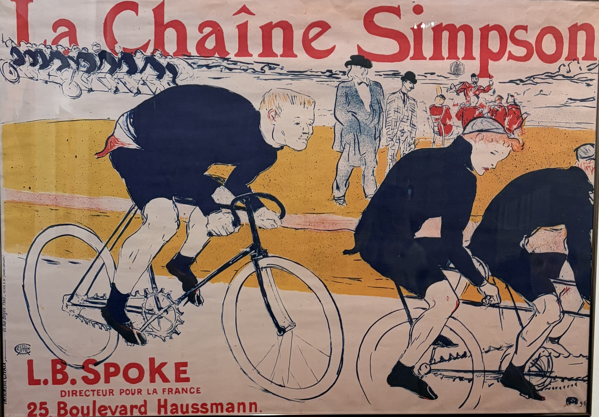
Large red lettering, dark silhouettes and cyclists cropped by the frame: the image catches the eye and makes the race seem to continue beyond the poster.
Photographie personnelleWhat do you notice first: the brand name or the cyclists? Observe the large dark shapes of the jerseys, the leaning bodies and the wheels cropped by the edges. Compare the foreground riders with the small line of cyclists at the upper left: how do these differences in scale create depth?
A poster must attract attention and communicate quickly. Lautrec combines a clearly legible name with a scene full of movement. Contrasting colours and simplified silhouettes make the image recognisable from a distance, while the cropped composition brings us close to the riders. Advertising becomes a composition in which text and image reinforce each other.
Light
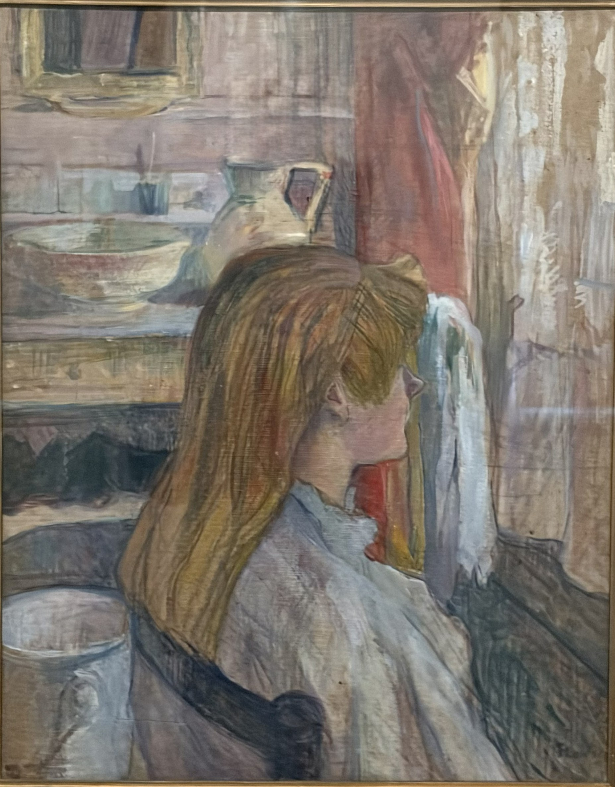
Light filters through the curtain and brushes the profile, hair and clothing. Everything seems bathed in the same soft glow.
Photographie personnelle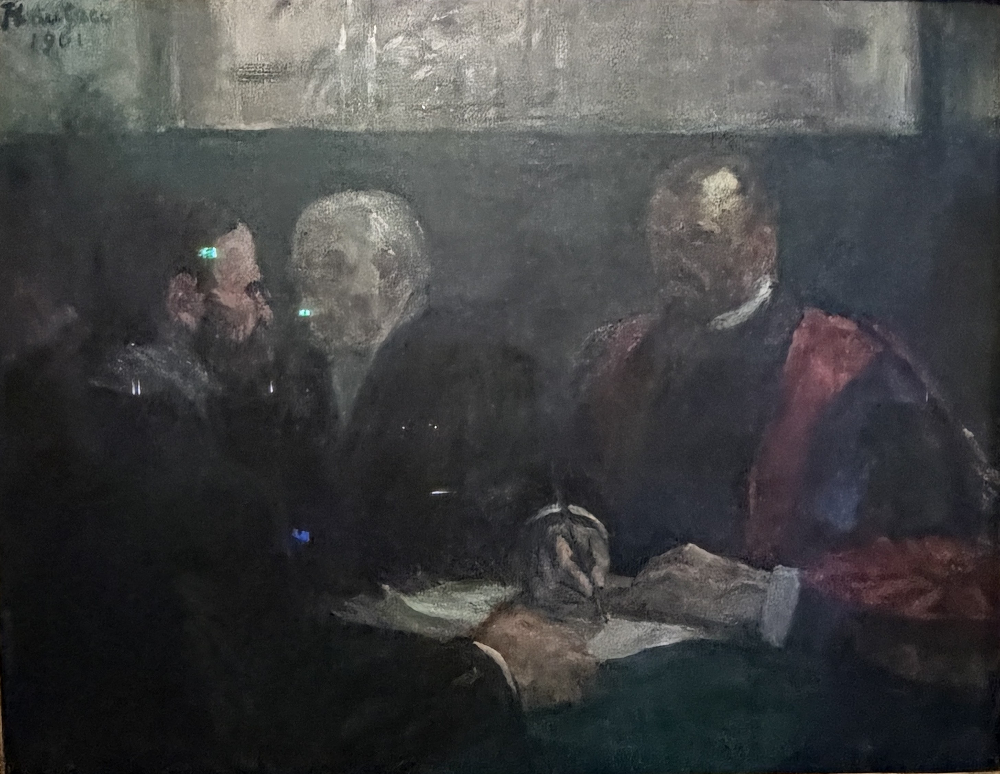
In this final completed painting, faces, hands and a white sheet emerge from the shadows. A few bright accents are enough to organise the scene.
Photographie personnelleLight does more than illuminate the figures: it shapes the painting and its atmosphere. Diffused beside the window, it connects the woman with her surroundings. Scarcer in the examination scene, it brings out selected details and gives greater weight to the shadows. Lautrec guides our eyes through what he illuminates as much as through what he leaves in darkness.